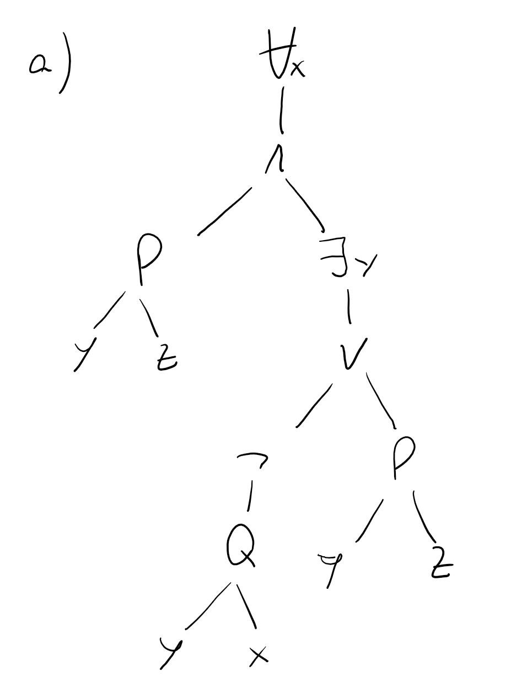

For this exercise I’m going to model a plane as a means of transportation. For this model, I’m only going to consider the aerodynamics of the plane, as well as the jet turbines, flaps and control center from the pilot’s cabin. We only need these components because they are the only ones needed to successfully simulate an airplane flying in the air.
We could think of a worst level of abstraction that could also include non essential parts of the airplane for this specific task, like for example, taking into consideration the entertainment system or even the bathroom disposal system. But these would be bad choices because they are not necessary parts of an airplane to fly, but make flights more comfortable for the users.
Given that the model’s outputs will be different depending on time, and that their order will not be interchangeable, this model is dynamic.
### A)

Free variables: \(z\)
Bound variables: \(x,y\)
$$ := \ := x.[P(x,z)y. [Q(y,x) P(y,z)]]\
:= x.[P(w,f(x)) y.[Q(y,x)P(y,f(x))]] $$
$$ ’ :=
x.[P(2^u+()+u!,z) y.[Q(y,x) P(y,z)]] $$
\[ Q \Rightarrow [\neg Q \Rightarrow R] \\ Q \Rightarrow [Q \lor R] \\ \neg Q \lor [Q \lor R] \\ [\neg Q \lor Q] \lor R \\ \top \lor R \\ \top \\ R \lor \neg R \]
\[ P \Rightarrow [Q \land R] \\ \neg P \lor [Q \land R] \\ [\neg P \lor Q] \land [\neg P \lor R] \\ [P \Rightarrow Q] \land [P \Rightarrow R] \]
\[ \neg \forall x.[A(f(x)) \Rightarrow B(x)]\\ \exists x.\neg[A(f(x)) \Rightarrow B(x)] \\ \exists x.\neg [\neg A(f(x)) \lor B(x)] \\ \exists x.[\neg\neg A(f(x)) \land \neg B(x)] \\ \exists x.[A(f(x)) \land \neg B(x)] \]
\[ A \setminus(B\cup A) \subseteq \emptyset \\ \forall x.[x\in A\setminus(B\cup A)] \Rightarrow x \in \emptyset \\ \forall x. [x \in \{a/ a\in A \land \neg a\in (B\cup A) \}] \Rightarrow x\in \emptyset \\ \forall x. [x \in A \land \neg[ x \in B \lor x \in A] ] \Rightarrow x\in \emptyset\\ \forall x. [x \in A \land [\neg x \in B \land \neg x \in A] ] \Rightarrow x\in \emptyset\\ \forall x. [[x \in A \land \neg x \in A ]\land \neg x \in B ] \Rightarrow x\in \emptyset\\ \forall x. [\bot \land \neg x \in B] \Rightarrow x \in \emptyset\\ \forall x.\bot \Rightarrow x \in \emptyset\\ \forall x. \top\\ \top \]
\[ R =\{(\text{Danube},\text{AT}),(\text{Danube},\text{RO})\} \subseteq \text{Rivers} \times \text{Countries} \]
\[ S = \{(0,0),(1,2),(2,4),(3,1),(4,3)\} \]